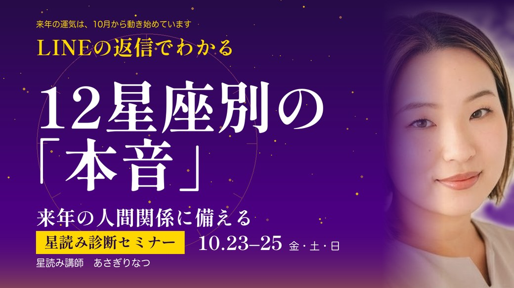

LINE登録特典
10月後半〜12月、あなたの星座は何を意識すると2027年につながる？
特典を受け取ってくださり、ありがとうございます。
2027年をどう過ごしたいかを考えるとき、実は「来年になってから」動き始めるのではなく、今この時期から少しずつ準備が始まっています。
だからこそ、10月〜12月の3ヶ月をただ過ごすのではなく、
「来年の私はどうなっていたい？」
「何を変えておきたい？」
「どんな人たちと一緒にいたい？」
そんなことを少しずつ考えてみてください。
このBOOKでは、2026年の残り3ヶ月を、12星座別に「意識したいこと」「やっておきたいこと」「気をつけたいこと」としてまとめました。
全部を完璧にやる必要はありません。
「これ、今の私に当てはまるかも」
そう感じたところを、ひとつだけでも意識してみてくださいね。
そして、この3ヶ月をどう過ごすかが、2027年のあなたにつながっていきます。
星を味方につけながら、来年を迎える準備をしていきましょう。
あさぎりなつ
タップすると、あなたの星座が開きます
「自分だけで頑張らない」が来年への準備
この3ヶ月は、勢いだけで前に進むより、周りとの関係性を見直す時期。
「私がやった方が早い」と抱え込まず、人に頼る・相談する・役割を分けることを意識して。
特に11月は、人との会話の中から今まで気づかなかった本音が見えてきそう。
やること人に相談する、協力者を見つける
気をつけること一人で全部背負う
人間関係では「自分で全部やる」より、人に頼ることを意識して。
「誰と一緒に進むか」を考える3ヶ月
来年に向けて、人間関係の整理が大切になりそう。
無理して付き合っている人、価値観が変わってきた人との関係を「今の自分に必要？」と見直してみて。
11月は特に、深い話をすることで関係性が変わる可能性も。
やること大切な人との時間を増やす
気をつけること「昔からこうだから」で関係を続ける
人間関係では「昔からの付き合い」ではなく、今の自分に心地よい関係を大切にして。
「人との会話」が来年のヒントになる
11月24日は双子座で満月。
この3ヶ月は、人との会話・情報・学びの中に来年につながるヒントがありそう。
特に「何気なく言われた一言」を流さず、自分がどう感じたのかを大切に。
やること気になることを言葉にする
気をつけること相手に合わせすぎて自分の本音を隠す
人間関係では何気ない会話の中にある相手の本音と、自分の本音に注目して。
「安心できる場所」を整える
来年に向けて大切なのは、外へ出ていくことだけじゃなく、安心して戻れる場所を作ること。
家族・家・仕事環境などを見直して、「ここにいると自分らしくいられる？」を考えてみて。
12月24日の蟹座満月も、自分にとっての安心や居場所を振り返るタイミングとして使えそう。
やること家・仕事環境を整える
気をつけること人の期待を優先しすぎる
人間関係では相手に合わせる前に「私はどうしたい？」を確認して。
「やりたい！」を小さくても形にする
11月16日に火星と木星が獅子座で重なるため、行動力や自己表現を後押しする流れとして読めます。
「いつかやりたい」で終わらせず、まず小さく始める。
来年やりたいことがあるなら、年内に一歩目を出しておくのがおすすめ。
やることやりたいことを実際に始める
気をつけること完璧な準備を待つ
人間関係では自分を飾らず、素直な気持ちや「やりたい」を伝えてみて。
「整える」が来年の飛躍につながる
11月25日から火星が乙女座へ。
ここからは、行動力が高まりやすい時期。
ただし、全部完璧にしようとすると逆に動けなくなるので、「まず60％でやってみる」を意識して。
やること習慣・仕事・生活を整理する
気をつけること自分にも人にも厳しくなりすぎる
人間関係では相手にも自分にも「完璧」を求めすぎないことを意識して。
「人に合わせる」から「自分で選ぶ」へ
11月14日に金星が順行へ戻るので、10〜11月にかけて考え直してきた「好き・嫌い」「心地よい・心地よくない」が少しずつ見えやすくなる時期。
来年は、誰かに選んでもらうのではなく、自分が選ぶことがテーマになりそう。
やること自分の「好き」を言葉にする
気をつけること嫌われないために我慢する
人間関係では「嫌われないため」ではなく「私はどうしたい？」を基準に選んで。
「本音」をごまかさない
11月9日は蠍座新月。さらに11月前半は水星・金星の逆行が終わっていくタイミング。
この時期は、自分でも気づかなかった本音に気づきやすい。
「本当はどうしたい？」を一度立ち止まって考えてみて。
やること本音をノートに書く
気をつけること「別にいい」と自分の気持ちをなかったことにする
人間関係では「察してほしい」で終わらせず、本音を言葉にすることを意識して。
「来年どうなりたい？」を先に決める
11月22日から太陽が射手座へ。12月9日には射手座新月。
年末に向けて、「私は来年どんな世界を見たい？」を考えるのにぴったり。
細かい方法より、まずは行きたい方向を決めること。
やること来年の理想を言葉にする
気をつけること現実的かどうかを考えすぎて諦める
人間関係では自分の世界を広げてくれる人とのつながりを大切にして。
「頑張る」より「続けられる形」に
この3ヶ月は、来年に向けて土台を整える時期。
仕事も生活も、「もっと頑張る」ではなく「どうしたら無理なく続けられる？」を考えて。
年末までに仕組み化できたことが、来年の自分を助けてくれそう。
やること習慣や仕組みを作る
気をつけること根性だけで乗り切ろうとする
人間関係では頑張って期待に応えるより、無理なく続けられる関係を作って。
「今までの当たり前」を疑ってみる
2026年は冥王星が水瓶座に滞在していて、大きな価値観の変化を意識しやすい時期。
「昔はこうだった」ではなく、「今の私はどうしたい？」を基準にしてみて。
人間関係も、昔からの関係だからという理由だけで維持しなくてOK。
やること古いルールを見直す
気をつけること「普通はこう」に縛られる
人間関係では「昔からこうだから」に縛られず、今の自分に合う関係を選んで。
「人の気持ち」と「自分の気持ち」を分ける
周りの気持ちを察知しやすいからこそ、この3ヶ月は境界線を意識。
「相手がそう思っている」ことと「私がどうしたいか」は別の話。
来年の人間関係を楽にするためにも、自分の気持ちを優先する練習を。
やること自分の希望を先に確認する
気をつけること相手の感情まで自分の責任にする
人間関係では相手の気持ちと自分の気持ちを分けて考えることを意識して。
ここまで読んで、
「私の星座は、来年どんな流れになるんだろう？」
「人間関係はどう変わっていくんだろう？」
そんなふうに感じた方へ。
実は、2027年の運気は2027年になってから突然始まるわけではありません。
2026年10月頃から、少しずつ来年につながる流れが始まっています。
だからこそ、今のうちに星の流れを知っておくことで、
「なんとなく過ごしていたら1年が終わっていた」
ではなく、
「この流れを知っていたから、こう動けた」
という1年に変えていくことができます。

来年の運気は、10月から動き始めています
LINEの返信でわかる
12星座別の「本音」で、
来年の人間関係に備える
星読み診断セミナー
10月23日〜25日
今回のテーマは、ズバリ「人間関係」。
自分の星座だけではなく、12星座それぞれの「本音」を知ることで、
「なんであの人、そういう反応をするんだろう？」
「どうしてこの人とは話が噛み合わないんだろう？」
そんな人間関係のモヤモヤも、星の視点から見えてくるかもしれません。
2027年を迎える前に、来年の人間関係を星読みで先取りしてみませんか？
詳細・お申し込みは、LINEからご案内します。
あなたの星を知って、2027年をもっと自分らしく動かしていきましょう。
あさぎりなつ